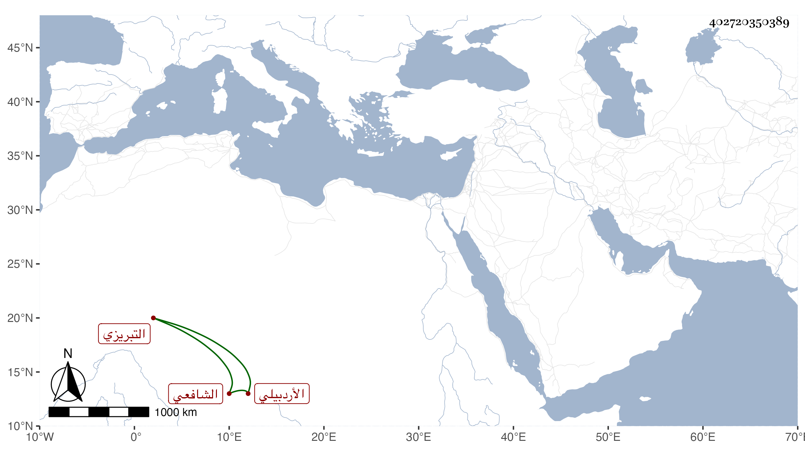

0902Sakhawi.DawLamic.ITO20230111-ara1.EIS1600.402720350389
Biography ID: 402720350389
372
محمد بن بدل بن محمد الشمس بن البدر الأردبيلي التبريزي الشافعي . حفظ القرآن والشاطبية والمصابيح للبغوي والحاوي الصغير والمنهاج والطوالع كلاهما للبيضاوي والتلخيص وشرحه المختصر ، وعرضها على جماعة كشيخنا في رمضان سنة ثلاث وأربعين بل وقرأ عليه قطعة جيدة من أول البخاري ووصفه بالشيخ الفاضل الحفظة الكامل العالم الباهر الماهر مفخر أهل مصره وغرة نجوم عصره وقال أعانه الله على الإنتفاع بما حفظه وأوزعه شكر نعمته لما أودعه واستحفظه .
